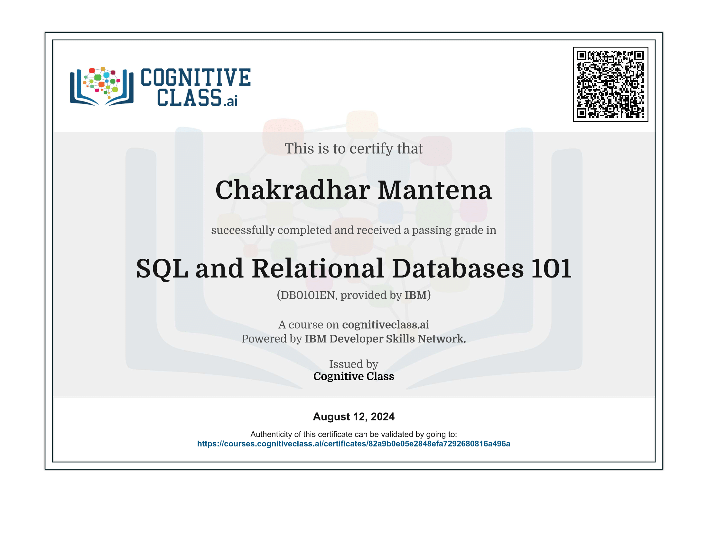
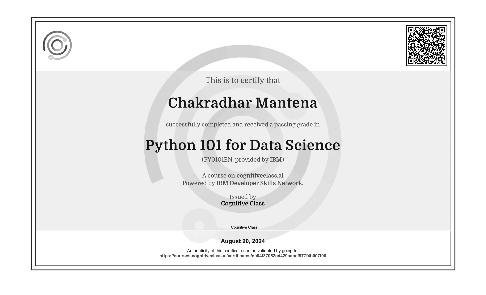
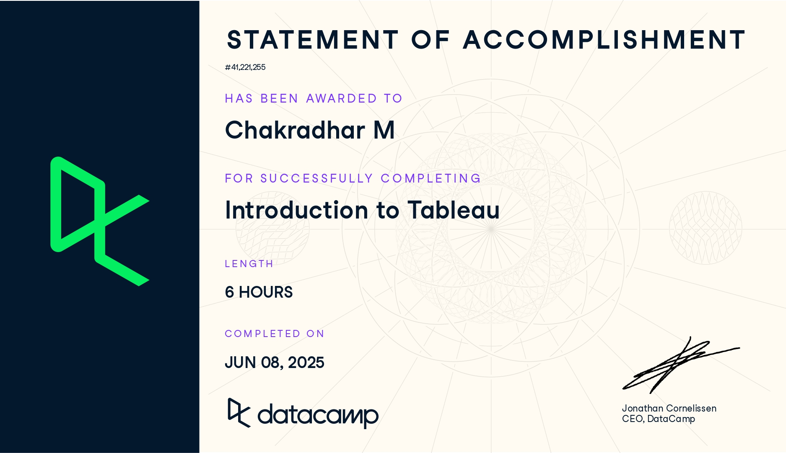
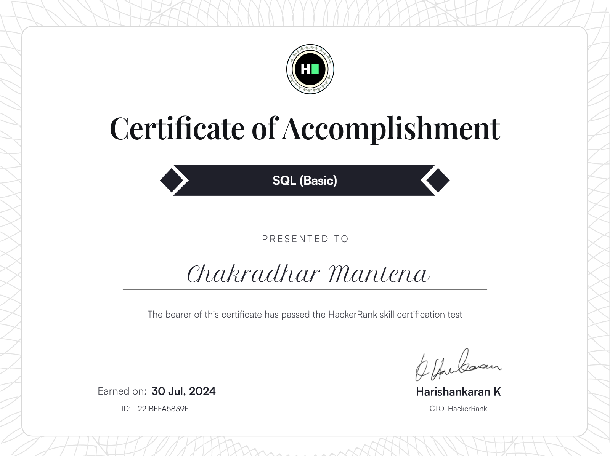
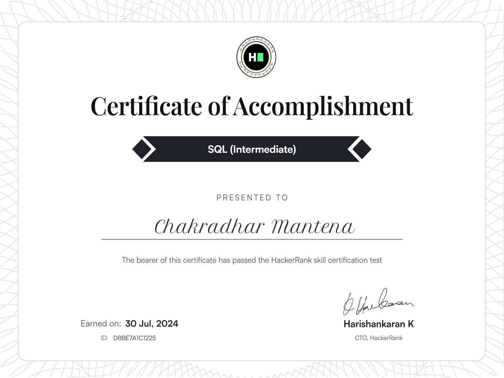
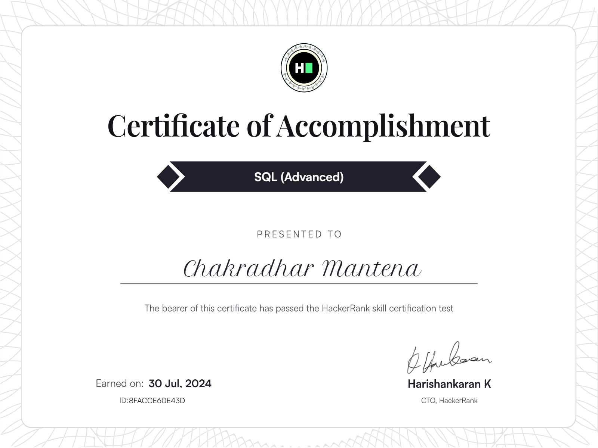

About Me
I'm M Chakradhar
Data Analyst • BI Developer • AI Practitioner
I completed my schooling at Jawahar Navodaya Vidyalaya and earned an Integrated Master's degree in Systems Biology from the University of Hyderabad. During my Master's, I worked on research projects involving metabolomics and transcriptomics data.
This experience sparked my interest in data science, and since then, I have been learning and applying tools like Python, SQL, Power BI, and AI to solve real problems. I enjoy turning data into insights that help businesses make better decisions.
I am passionate about growing my skills and contributing as a Data & AI professional to deliver meaningful and practical solutions.
Skills & Expertise
Technical Tools
Python
75%
SQL
80%
Power BI
85%
Looker Studio
65%
Data Science Libraries
80%
AI Tools
85%
Core Competencies & Soft Skills
Projects

Merchandise Analysis
An interactive Power BI report analyzing the performance of an influencer's merchandise business.

Data Explorer Tool
A Streamlit-based data app built with Python that enables quick exploration of any dataset.

EV Market Analysis
A comprehensive analysis of healthcare data to identify patterns and improve patient outcomes.

Cab Services Analysis
A machine learning project to segment customers based on purchasing behavior.
Data Challenges
This section features all the data challenges I've participated in, excluding those already listed under projects.

Mobile Sales Analysis
This project analyzes 2024 mobile phone sales for a multinational retailer.

Supply Chain Analysis
This Project delivers supply chain insights on inventory, supplier performance, and logistics.

Holiday Sales Analysis
This project analyzes sales data from Holiday, and regular shopping periods to reveal consumer behavior trends.

Logistics Analysis
This project explores logistics data to optimize shipments, cut delays, and boost efficiency.

Crime Analysis
This Project analyzes crime patterns in Washington, D.C., focusing on crime frequency, hotspots, trends, and severity.

Candy Market Analysis
This project analyzes confectionery market data from a top European market research firm.

Flight Delays Analysis
This project analyzes flight delays across airports and airlines.

Email Campaign Analysis
This project analyzes email campaign performance for a DIY content platform.
Resume
Download my resume to learn more about my education, skills, and experience.
Download ResumeExperience & Journey
Seeking New Opportunities
2024 - PresentActively pursuing full-time opportunities in data analytics and business intelligence. Working on projects that reflect real-world problem-solving skills and current industry practices.
Self-Directed Learning
2022 - 2024Focused learning on data analytics tools through online platforms, data challenges, and project building.
Research - Systems Biology
2020 - 2022Research on omics data analysis during Master's at University of Hyderabad. Built foundation in R, statistics, and biological networks.
Academic Foundation
2015 - 2020Integrated Master's in Systems Biology from University of Hyderabad and school education at JNV. Strengthened skills in mathematics, statistics, and logical reasoning.
Achievements
Certifications
Power BI Certification
Show CredentialSQL Certification
 Show CredentialPython Certification
 Show CredentialTableau Certification
 Show CredentialPython Libraries
Show CredentialHackerRank Python
Show CredentialHackerRank SQL Basic
 Show CredentialSQL Intermediate
 Show CredentialHackerRank SQL Advanced
 Show CredentialServices
Data Cleaning & Preparation
Structure raw data and fix inconsistencies using Python, SQL, and Power Query.
SQL & Database Analysis
Extract, filter, and analyze data from relational databases using advanced SQL.
Web Scraping
Gather relevant data from websites using Python libraries like BeautifulSoup and Selenium.
Exploratory Data Analysis
Identify trends, patterns, and anomalies using visual and statistical exploration techniques.
Data Visualization
Create decision-driven visuals that bring clarity and context to complex data.
Dashboard Development
Build user-centric dashboards in Power BI, Tableau, and Looker Studio for real-time insights.
UX/UI Optimization
Design clear, intuitive dashboards with a user-centric focus to improve decision-making.
Automation & Reporting
Automate repetitive reports and workflows using Python, SQL, and Power BI.
BI Consulting
Translate business goals into measurable KPIs and build data pipelines to track them.
Contact Me
Feel free to reach out to me through any of the following platforms
chakradhar251122@gmail.com